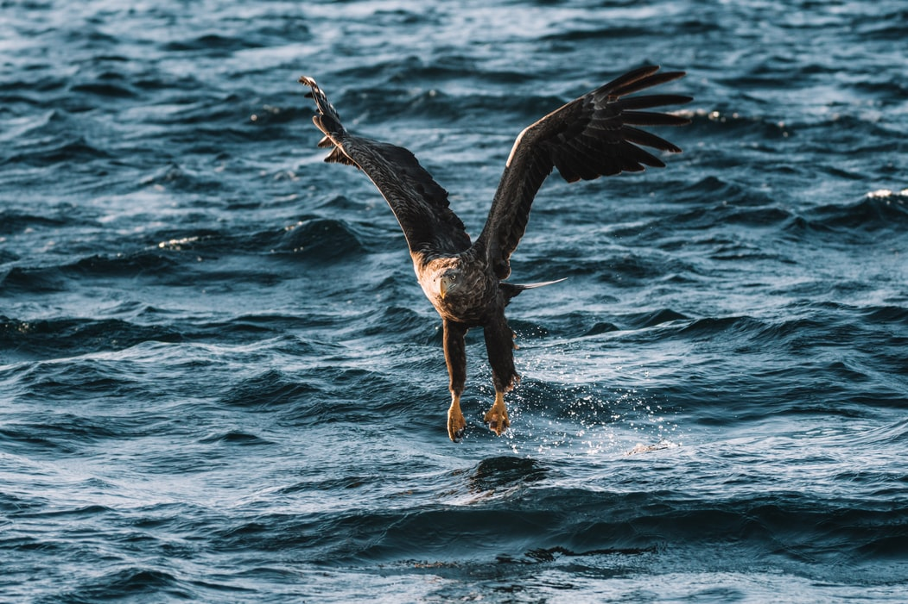
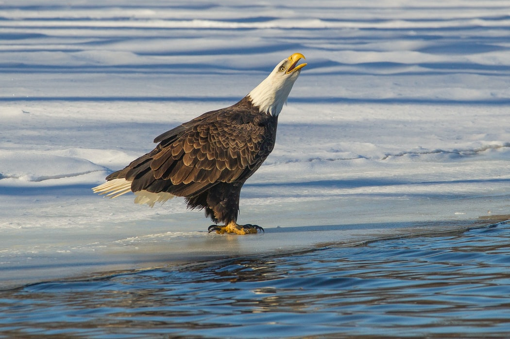

Sea Eagle As Specie
Due to their geographic isolation, only these eagles are believed
to breed in the eastern part of Russia, on the coastline and
islands of the Sea of Okhotsk and Bering Sea. Many volcanoes and
lava flows are found on the Kamchatka Peninsula. For the winter, a
fair number of Steller's sea eagles leave their breeding areas in
Japan and travel as far as Korea, and occasionally further. Not
everyone migrates, but rather people move to the open water in the
winter.


Hunting and Diet
Coastal and inland waterways provide eagles with their main food
sources. The Steller's sea eagle's breeding grounds are known for
their abundance of salmon. These eagles mainly subsist on this
resource, and they are both hunters and scavengers. Because of the
annual salmon runs, enormous populations of these fish are
available, and this allows for Steller's sea eagle nests to be
typically located near coasts and rivers, where these fish
congregate.